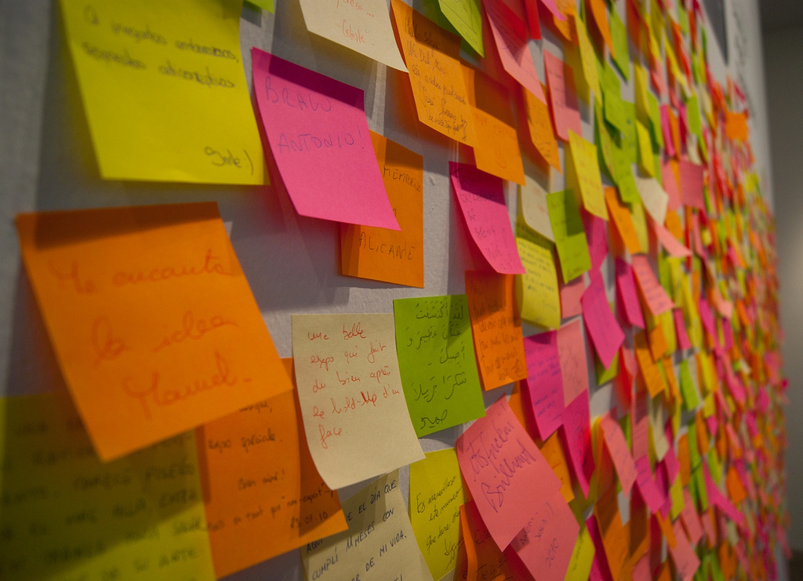

Pratiques agiles
Anti-pattern et mise en oeuvre
No silver bullet

https://www.flickr.com/photos/rwr/2220085330/sizes/l
Scrum anti-patterns
https://www.flickr.com/photos/quique_fs/5171770977/sizes/l
Attention à une mise en place "top-down"
Effet Big Bang

https://www.flickr.com/photos/aftab/5472696317/sizes/l
By the book
https://www.flickr.com/photos/charlotte90t/6989790541/sizes/l
Artefacts versus agilité

https://www.flickr.com/photos/iain/71753848/sizes/o/
Trop Estimer.
https://www.flickr.com/photos/tudedude/8120221534/sizes/l/
Planifier avec la vélocité les premiers mois

https://www.flickr.com/photos/timony/3917821067/sizes/z/
Daily et Demo en mode reporting

http://www.implementingscrum.com/2006/09/11/the-classic-story-of-the-pig-and-chicken/
Process > Hommes
Bilan
- Motivation en baisse
- Turn Over en hausse
- Vélocité en forte baisse
- Qualité en baisse
Renverser la table de thé
https://www.flickr.com/photos/satorinihon/7856579462/sizes/l
Publicité
3ème Mardi de chaque à Seine Innopolis
www.normandyjug.orgPublicité
27 Novembre 2014
www.codeursenseine.comHommes > Process
1) Ne rien changer
2) mettre en place les mesures
3) mettre en place une action
4) faire
5) mesurer si on conserve l'action ou non
6) goto 3)
n) conserver l'objectif, s'améliorer pas suivre une aveuglément
Mesure
Cycle Time
Lead Time
Productivité
Happiness
Actions
Sprints ou flux de travail
Limiter le wip
Estimer
Déchets?
Test d'acceptance
Cérémoniaux à la carte
S'adapter en fonction du besoin.
Conserver ou abandonner des actions
Ne pas avoir peur d'abandonner
Suivre les bonnes pratiques
Suivre vos bonnes pratiques
Par abandon successifs de solutions, il ne reste que des choses qui sont possibles… Parmi celles qui restent, si elles sont toutes bonnes, peu importe si on ne prend pas exactement la meilleure.
Dimitri Baeli, Grand agiliste Français
Présentation
Youen Chéné
@youen_chene
https://github.com/youenchene/
Manager-Développeur à Masternaut
Entrepreneur sur Driveo
Activiste au Normandy JUG et Codeurs en Seine